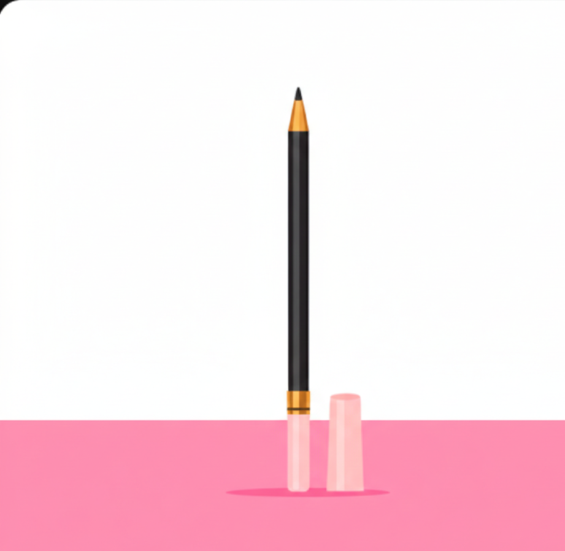

Eyeliner is a cosmetic product used to define and enhance the appearance of the eyes. It comes in various forms such as pencil, liquid, and gel, allowing individuals to create different looks and styles. Eyeliner can be applied along the lash line to make the eyes appear more defined and dramatic.